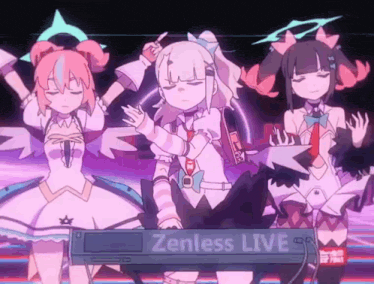

Information
In Zenless Zone Zero (ZZZ), Aria is an S-Rank Ether Anomaly Agent from the Angels of Delusion faction. Unlocking her Mindscape Cinema duplicates significantly boosts her capability as an on-field Anomaly DPS by adding critical hits to her signature "Abloom" effect, lowering enemy defenses, and optimizing her Fandom Power resource management. (sheis the main inspiration for Emmy)

Aria with the other Member of the Angel of Delusion.
Aria's Personality
- She is a bit more on the calmer side compared to the other automatons.
- She is very protective of those she cares about.
- She tends to be the third voice of reason of the automatons if Iris and their character aren't around when it comes to decision-making.
- She tends to prefer more peaceful environments but doesn't mind a occasional conflict chaos.